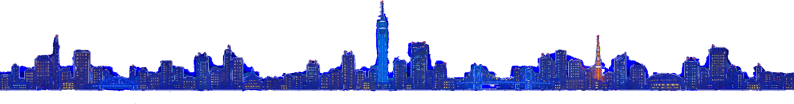

今夜も、いい夜に。
行く前に、料金やカラオケ、営業時間、一見さん歓迎かどうかがわかるから、安心して選べる。
お気に入りに登録して、あとから見返せます。
お店での体験や感想を投稿する機能です。
初めてのお店に行くとき、気になるのは、どんな人が迎えてくれるのかということ。麻布十番の「LA GAKU AZABU」で話を聞いたのは、お客さんから「えみママ」「えみち」と呼ばれるママです。 どんな人に来てほしいかを尋ねると、答えは「人と話す…